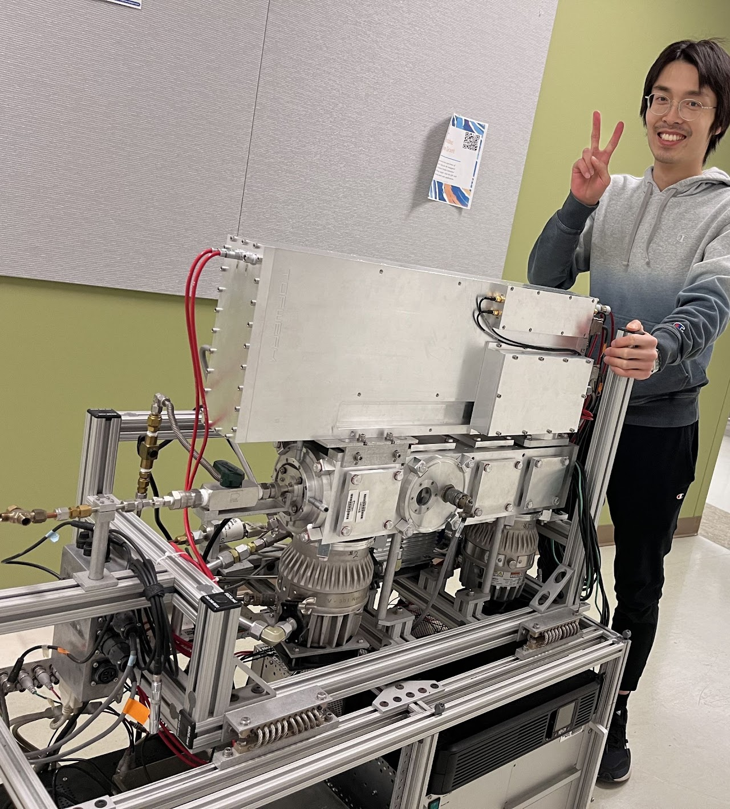

Education
-
Washington University in St. Louis (2023 - Now)
- Co-advised with Professor Jay Turner
- M.S. Energy, Environmental and Chemical Engineering, Washington University in St. Louis, 2023
- M.S. Environmental Engineering, National Cheng Kung University, 2018
- B.S. Environmental Engineering, National Cheng Kung University, 2016
Projects
- Evolution of brown carbon in wildfire plumes
- Offline filter analysis using HR-AMS
Contact
c.jhao-hong@wustl.edu
Short Bio
Jhao-Hong Chen's research interests include aerosol science, atmospheric chemistry, air quality management, climate change, and instrument development. Jhao-Hong works on data analysis of wildfires from field measurements, modification and deployment of instruments for particles and gases based on mass spectrometry, and offline chemical characterization of filtered aerosol samples.